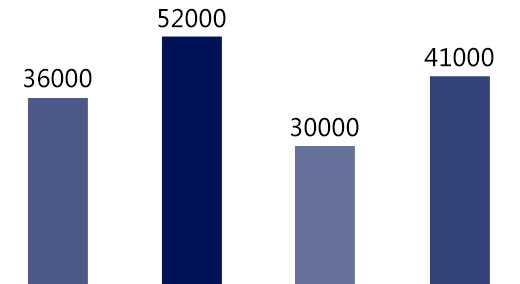

Delay therapy has successfully cured millions of men worldwide suffering from premature ejaculation, and it is now internationally recognized as the most advanced treatment for this condition.
ChinaSouth KoreaUSAU.K.
The number of people treated in the four countries of BELI active factor delayed therapy in the United States (2014)Data source: British Journal of Sexual Medicine 201412
17%
more than 30 minutes
36%
20 minutes ~ 30 minutes
43%
15minutes ~ 20 minutes
4%
under 15 minutes
The data comes from the statistics of 2000 surgical cases.
How they felt after receiving treatmentMr. Gurung:Compared to the previous 1 or 2 minutes, there has been a leap forward. The important thing is that the wife is satisfied.
Mr. Shrestha：After trying many methods and spending a lot of money, I was finally cured by this surgery.
Mr. Tamang：The effect is quite obvious. I used to have to ejaculate whenever I felt pleasure. Now I feel pleasure for a long time and can still control myself.
Mr. Magar：After the surgery, I have to wait for 28 days before I can have sex. There are still 5 days left to try the effect.
Mr. JoshiShe was in such a good state that she could penetrate for half an hour, and she didn't know how many times she had orgasmed.
Mr. Phuyal：After the treatment, I feel that my sexual ability has improved a lot and is long-lasting and stable.
Mr. Bista：At first I heard that surgery was needed to treat premature ejaculation, but I actually refused. I don’t regret it now, it works really well.
Mr. Prakash oli:This surgery can only be done in Yangtze River. The dorsal nerve block surgery in other hospitals is not very good.
Mr. Anish tamang:The effect was not obvious at first, maybe because I didn’t get used to it, but then it took longer and longer, and now it’s stable at about 20 minutes.
Mr.Nishan Sharma:It's very convenient. It's done quickly and you can leave immediately after it's done. It's not expensive either.
Mr. Anish Magar: My wife had an orgasm for the first time after the operation. She said she hadn't felt this way for a long time.
Mr. Sabin Bajracharya:I've tried everything from taking medicine to aphrodisiac, but it doesn't work. Surgery is the most effective.
Penetration depth:0.3mmSwipe distance:0.85mm
Use "Z" type scanning to detect, and use different color scales to mark the sensitivity threshold, adjust the nerve sensitivity to the best state, and achieve the purpose of curing premature ejaculation and prolonging ejaculation time.。
The whole process can be completed in 15 minutes Can't read? there is a question? > consult more clearlyTraditionblockWhile the surgery reduces the sensitivity of the glans, it also damages the dorsal nerve of the penis.
The surgical technology which only regulates but does not block, has successfully solved the disadvantages of blocking surgery and has no functional side effects after surgery.
1. Cutting-edge technology: High-level microscopic technology has a recognition accuracy 260 times higher than the naked eye, and the safety factor is over the top!
2. Expert operation: Nationally certified expert with no accidents in 10,000 cases More than 20 years of clinical experience in reproductive plastic surgery, and possesses the American BELI active factor delayed therapy certificate
3. Surgical environment: 10,000-level laminar flow purification operating room The highest standard reproductive plastic surgery environment, zero infection! Recover fast!
Still worried? Tell the experts about your concernsProfessional men's hospital
Male Sexual Function Rehabilitation Center
Premature ejaculation recovery rate 93.7%
More than 20,000 people have recovered from premature ejaculation
It’s time to put an end to premature ejaculation!
>Surgery Book Now!
Free registration fee can save a little bit
No need to queue, see the expert right away when you arrive at the hospital